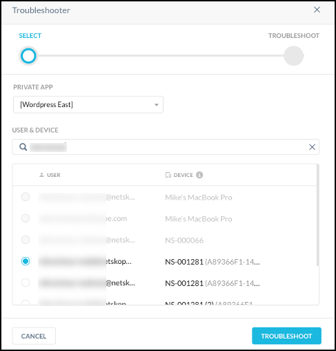
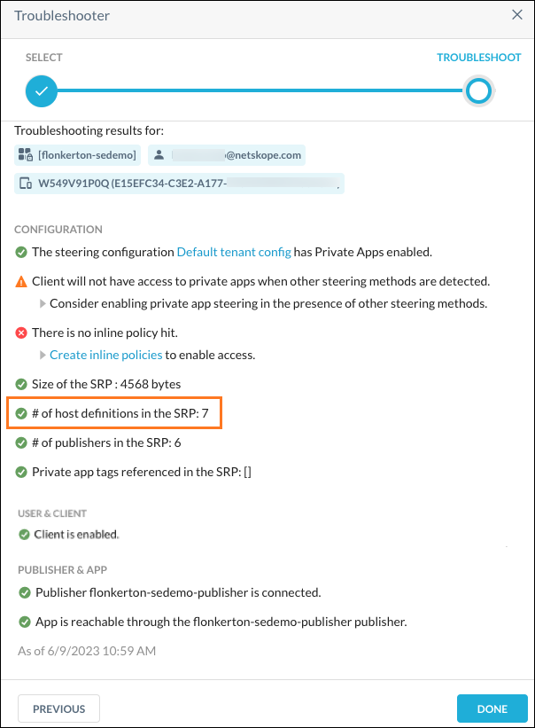
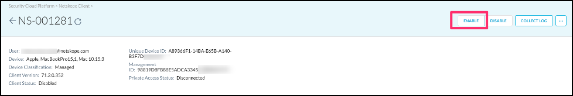
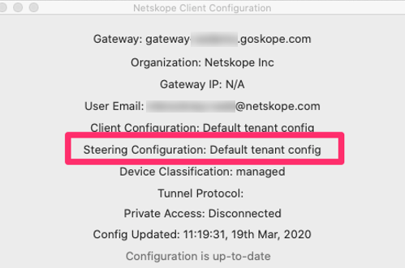
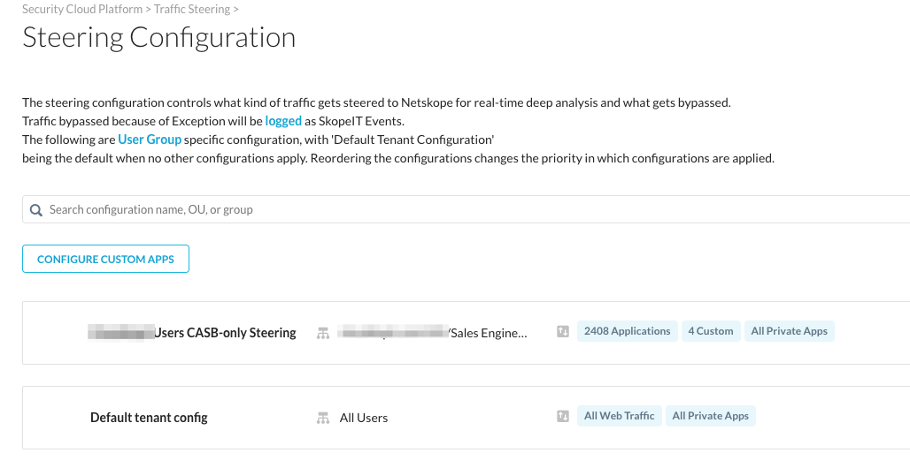
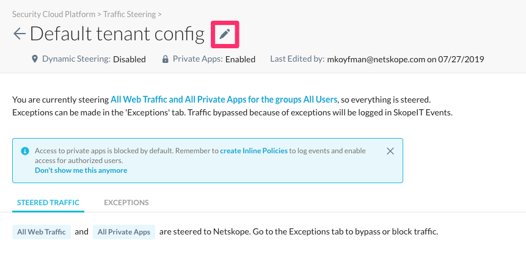
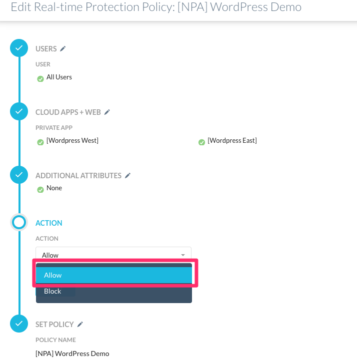
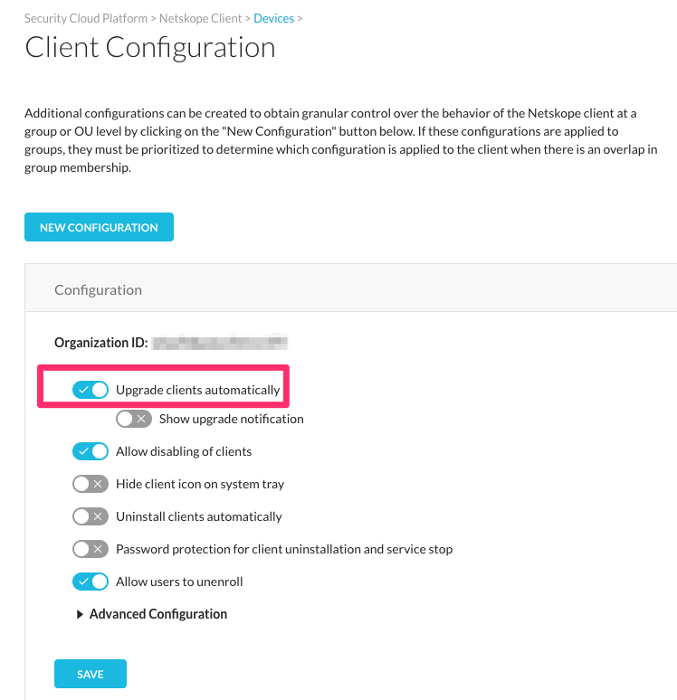
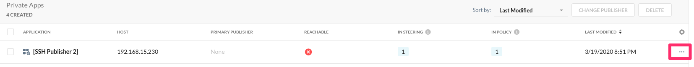

The NPA Troubleshooter Tool
Using the Troubleshooter Tool involves:
Finding Errors with the Troubleshooter Tool
NPA provides a troubleshooting tool in the UI to help you resolve connection issues.
Log into the Netskope UI at
<tenantname>.goskope.comif your tenant is hosted in the US. If not, use:<tenantname>.eu.goskope.comif your tenant is in the E.U.<tenantname>.de.goskope.comif your tenant is in Germany.
In the Netskope UI, go to Settings > Security Cloud Platform > Custom Apps > Private Apps.
Select the private app, the user, or the device that is having the issue, and then click Troubleshooter.

The Troubleshooter dialog shows the private app, steering configuration, Client, policy, and Publisher information. Click Troubleshoot.
 The Troubleshooter dialog changes to show status of the private app, steering configuration, Client, policy, and Publishers.
Tip
If you have not configured a secondary publisher, it is normal to see the hazard symbol for the status.
 Fix any components that do not show a green status check mark using the suggested methods in the next section.
Troubleshooting Errors with the Netskope UI
Here are methods for fixing errors found by the Troubleshooter.
Tip
The Troubleshooter results provide links to the Netskope UI pages where configuration changes can be made to fix errors. For example, under Configuration, clicking Default tenant config opens the Default Tenant Configuration page.
Make sure the Client is enabled on the Troubleshooter page.
Under User & Client, if the Client is disabled, click device details in the Troubleshooter dialog to open the Devices details, and then click Enable.
|  |
Enable Private Apps in the steering configuration.
Determine which steering configuration the user is in. Have the user right-click their Netskope Client icon in the system tray on their device (if you are displaying it) and select Configuration.
Otherwise, jump to the next step to go to the Steering Configuration page (Settings > Security Cloud Platform > Steering Configuration), and select the Steering Configuration based on the OU or Group that user is a member of.
In this case, the user is in the Default tenant config group.
 In the Netskope UI (Settings > Security Cloud Platform > Steering Configuration), click on the name of the Steering Configuration the user is part of, like Default tenant config.
 Click the pencil icon to configure the steering configuration.
 Make sure Steer all Private Apps is enabled. If not, enable it and then click Done.

Review the policy and ensure it is set to Allow.
Tip
Inline Policies are now called Real-time Protection policies.
Go to Settings >Policies >Real-time Protection and verify the policy Action is Allow.

If it is not set to Allow, click on the name of the policy and change the Action from Block to Allow.

There is no Real-time Protection policy that matches the user/user group/device classification/OS; Private Access implicitly denies access when there is no matching policy.
This could be because a user matches by group and OS to a policy, but doesn’t match by your device classification, or the user’s AD groups may have changed, and now a user doesn’t match by user group.
Create a new account for the user to allow access to private apps.
Contact Netskope support if you believe there is an error.
Each Netskope user can have one or more Enterprise accounts (synced from AD or SCIM). By default, there should be only one, and Netskope only looks at that one account. Sometimes users have multiple accounts. This is especially problematic if one account is disabled and another is enabled.
Suggestion: Enable the user through Active Directory or via SCIM (Okta or Azure AD).
The Client version needs to release 70 or later.
Updates, which are available from the support site, can be pushed out via software distribution tools like SCCM. Updates can also be controlled in the Netskope UI (Settings > Real-time Protection > Devices). Click Client Configuration.
 |
Enable Upgrade clients automatically to update an outdated Client version.
Important
Enabling Upgrade clients automatically will affect all devices in a particular Client Configuration. You may need to review this change with additional team members before upgrading a large number of Clients.
After changing this setting, click Save.
|  |
Contact Netskope Support if you believe this is the error.
Check to ensure a Publisher is set up for a private app.
Go to Settings > Security Cloud Platform > Custom Apps > Private App. Click the menu icon
 to edit the app.
to edit the app. Click in the Publisher text field and select the correct Publisher for the app and click Save.

The Reachable status should turn from a red X to a green checkmark. It may take a minute or two for the status to change.